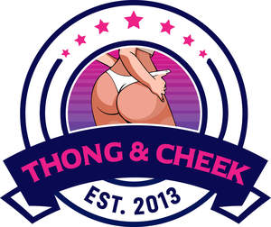

Trade Mark Journal No.2025/011 14 March 2025
UK00004166858 28 February 2025 (25,35)

- Class 25
- Clothes; Clothing; Beach clothes; Denims [clothing]; Jackets [clothing]; Shorts [clothing]; Drawers [clothing]; Drawers as clothing; Aprons [clothing]; Clothes for sports; Jackets (Stuff -) [clothing]; Stuff jackets [clothing]; Clothes for sport; Linen clothing; Headbands [clothing]; Headbands for clothing; Bottoms [clothing]; Trunks being clothing; Maternity clothing; Babies' pants [clothing]; Layettes [clothing]; Clothing layettes; Woolen clothing; Oilskins [clothing]; Hoods [clothing]; Clothing for leisure wear; Ready-to-wear clothing; Garments for protecting clothing; Clothing for babies; Gabardines [clothing]; Bodies [clothing]; Belts [clothing]; Belts for clothing; Tops [clothing]; Gussets for underwear [parts of clothing]; Playsuits [clothing]; Pockets for clothing; Collars [clothing]; Veils [clothing]; Knitwear [clothing]; Corsets [clothing, foundation garments]; Paper hats for use as clothing items; Silk clothing; Fabric belts [clothing]; Mitts [clothing]; Beach clothing; Hats (Paper -) [clothing]; Paper hats [clothing]; Belts (Money -) [clothing]; Money belts [clothing]; Braces for clothing; Chaps (clothing); Ready-made clothing; Gussets for bathing suits [parts of clothing]; Embroidered clothing; Casual clothing; Knitted clothing; Underwear; Jockstraps [underwear]; Briefs [underwear]; Sweat-absorbent underclothing [underwear]; Trunks [underwear]; Sweat-absorbent underwear; Underwear (Anti-sweat -); Anti-sweat underwear; Maternity underwear; Boy shorts [underwear]; Disposable underwear; Knitted underwear; Undergarments; Underwear for women; Thermal underwear; Underpants; Babies' pants [underwear]; Men's underwear; Functional underwear; Underclothes; Women's underwear; Long underwear; Nappy pants [clothing]; Panties; Teddies [undergarments]; Ladies' underwear; Lingerie; Slips [undergarments]; Knickers; Pants; Underpants for babies; G-strings; Trousers shorts; Jogging bottoms [clothing]; Thongs; Underclothing; Maternity lingerie; Maternity pants; Teddies [underclothing]; Denim pants; Thong sandals; Camouflage pants; Waterproof pants; Dress pants; Leggings [trousers]; Pajamas; Gloves [clothing]; Gloves as clothing; Trouser socks; Undershirts; Underclothing (Anti-sweat -); Anti-sweat underclothing; Corsets [underclothing]; Sweat-absorbent underclothing; Socks and stockings; Bodices [lingerie]; Pyjamas; Latex clothing; Braces for clothing [suspenders]; Jogging pants; Bra straps [parts of clothing]; Anti-perspirant socks; Leather pants; Baby pants; Trousers; Braces [suspenders] for clothing / Suspenders [braces] for clothing; Gussets for tights [parts of clothing]; Maternity shorts; Slips [underclothing]; Babies' undergarments; Swimsuits; Hosiery; Bandeaux [clothing]; Sleep pants; Slips [clothing]; Waterproof clothing; Cycling pants; Sweat-absorbent socks; Nipple pasties being underclothing; Maillots [hosiery]; Bed socks; Bras; Sweatpants; Pantyhose; Muffs [clothing]; Warm-up pants; Womens' undergarments; Lounge pants; Bra straps; Bikinis; Bra strap extenders; Strapless bras; Strapless brassieres; Straps for bras; Toe straps for Japanese style sandals [zori]; Toe straps for zori [Japanese style sandals]; Panty hose; Stockings (Sweat-absorbent -); Sweat-absorbent stockings; Stockings [sweat-absorbent]; Trousers of leather; Capri pants; Sock suspenders; Bra extenders; Garters; Tights; Sandals; Adhesive bras; Bib tights; Fitted swimming costumes with bra cups; Knee-high stockings; Chemise tops; Japanese style sandals of leather; Trouser straps; Lace boots; Sandals and beach shoes; Pajama bottoms; Stockings (Heel pieces for -); Heel pieces for stockings; Leather slippers; Uppers of woven rattan for Japanese style sandals; Shoe straps; Shorts; Leather dresses; Bustiers; Toe straps for Japanese style wooden clogs; Stretch pants; Adhesive brassieres; Bib shorts; Nipple pasties; Stocking suspenders; Culotte skirts; Suspenders; Tracksuit bottoms; Bralettes; Swimwear; Negligees; Leather shoes; Brassieres; Stockings; Horse-riding pants; Japanese style sandals (zori); Yoga pants; Swim shorts; Swim trunks; Swim suits; Swim briefs; Swim caps; Swim wear for children; Swimming trunks; Swimming suits; Swimming costumes; Swimming caps; Swim wear for gentlemen and ladies; Swimming caps [bathing caps]; Bathing trunks; Trunks (Bathing -); Triathlon clothing; Gym shorts; Gym suits; Gym boots; Yoga shoes; Boxing shoes; Jogging shoes; Jogging outfits; Yoga shirts; Exercise wear; Gymnastic shoes; Gymwear; Boxing shorts; Tennis sweatbands; Clothing for gymnastics; Trainers; Yoga socks; Nursing bras; Sports bras; Moisture-wicking sports bras; Shapewear; Camisoles; Girdles [corsets]; Maternity leggings; Tankinis; Moisture-wicking sports pants; Nurse pants; Shoulder straps for clothing; Corsets [foundation clothing]; Corsets being foundation clothing; Waist cinchers; Dress shirts; Sports pants; Girdles; Halter tops; Maternity wear; Corsets; Moisture-wicking sports shirts; Maternity sleepwear; Maternity shirts.
- Class 35
- Retail services connected with the sale of clothing and clothing accessories; Inserting printed matter into envelopes; Retail services in relation to cups and drinking glasses; Wholesale services in relation to cups and glasses; Retail services in relation to cups and glasses; Wholesale services relating to cups and glasses; Online retail store services in relation to clothing; Advertising the goods and services of online vendors via a searchable online guide; Online retail store services relating to clothing; Online retail services for downloadable virtual clothing; Online marketing; Online advertising; Online ordering services; Online retail services in relation to downloadable virtual handbags; Providing a searchable online advertising guide featuring the goods and services of other on-line vendors on the internet; Online retail services relating to jewelry; Online retail services in relation to downloadable virtual clothing; Online advertisements; Online retail services in relation to downloadable virtual footwear; Providing a searchable online advertising guide featuring the goods and services of online vendors; Online retail services for downloadable digital music; Online retail services in relation to downloadable virtual headwear; Online retail services relating to handbags; Online retail services in relation to downloadable virtual works of art; Online advertising services; Online retail services relating to clothing; Online business networking services; Arranging commercial transactions, for others, via online shops; On-line advertising; Online retail services relating to cosmetics; Online retail services relating to toys; Online ordering services in the field of restaurant take-out and delivery; Online retail services for downloadable ring tones; Online retail services relating to luggage; Online advertising on a computer network; Business information services provided online from a computer database or the internet; Shop retail services connected with carpets; Compilation of online business directories; Retail shop window display arrangement services; Online advertising on computer networks; Computerized on-line ordering services; On-line auctioneering; On-line auctioneering services via the Internet; Online retail services for downloadable and pre-recorded music and movies; On-line ordering services in the field of restaurant take-out and delivery; Providing online marketplaces for sellers of goods and or services; On-line promotion of computer networks and websites; Providing searchable online advertising guides; Rental of advertising space on-line; Conducting virtual trade show exhibitions online; Provision of an online marketplace for buyers and sellers of goods and services; On-line trading services in which seller posts products to be auctioned and bidding is done via the Internet; Business information services provided on-line from a computer database or the internet; Online community management services; On-line advertising on a computer network; Business information services provided online from a global computer network or the internet; Retail store services in the field of clothing; Product demonstration services in shop windows by live models; On-line advertising on computer networks; Provision of an on-line marketplace for buyers and sellers of goods and services; Mail order retail services for clothing accessories; Shop window dressing.
Mr James Seamus Moore